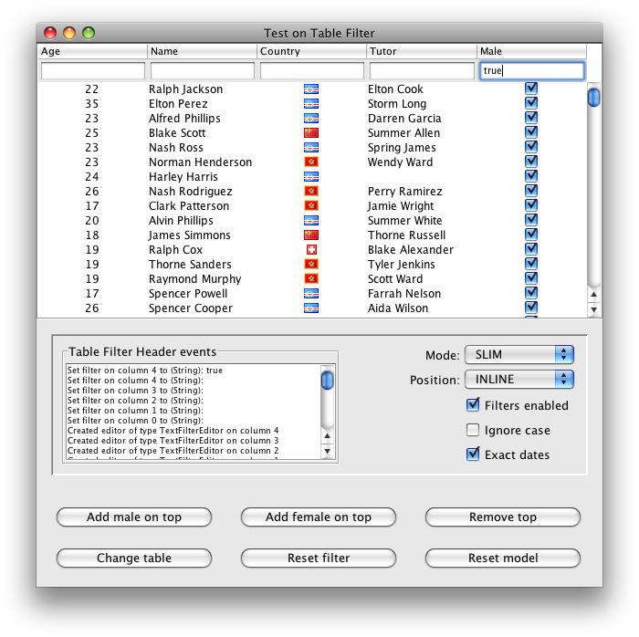
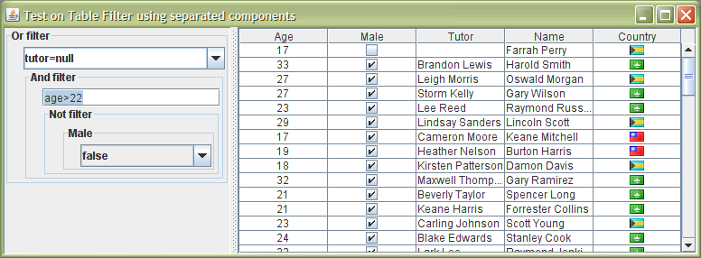
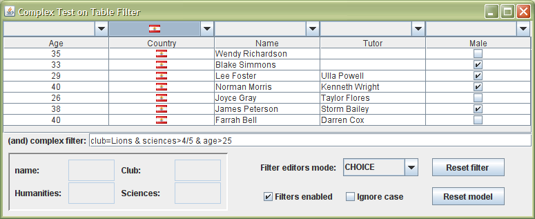

Examples
The source distribution of the library includes several swing applications:
These applications are used as tests, but also as example source code.
The first application can be downloaded and executed directly (it uses the Java 5 version).
AppTestMain.java

This example shows the following functionality:
- Change the editor mode, showing all the available filter editors.
- Enable/disable programmatically the filters.
- Ignore the case, applicable only to the parsing-based filter editors.
- Three buttons, to add new data or remove it; this is useful to verify the behaviour of the table when data is updated/removed/inserted. In Java 6, this behaviour is defined in the JTable implementation, while in Java 5 has been included in the TableModelFilter. In special, note that inserts and removes imply the immediate appliance of the filter on all the rows, while updating data does not; this can be useful while updating rows (like the male state in the example), for the row not to disappear while the edition happens.
- Change table performs the adding of removal of some columns in the model. It shows the behaviour of the library in this event.
- Reset model sets a new model to the table.
- Reset filter shows the effect of executing resetFilters on the TableFilterHeader.
When the expanded table is shown, with all the columns, the name column includes, if the editor is in parsing text mode, a regular expression parser (all the other columns include the default parser).
AppTestWithSeparatedComponents.java

This is a basic example showing the composition of multiple filters on standalone mode.
AppTestComplex.java

This is a more complex example showing the composition of multiple filters, using standalone mode and the generic header.
It includes as well and additional feature: although the table contains only 5 columns, filters can be used with additional variables, or identifiers. For example, the table does not contain a club column, but the filter in the previous figure is using the club value associated to each row to specify a condition.
There are several ways to implement this feature. In the example, it is implemented by implementing an extended TableModel which has only the initial 5 columns visible, but provides information on additional fields for each row. The other way to implement this feature is by setting a specialized TableFilter that overrides the include method to pass a different RowFilter.Entry instance to the filters, implementing an extending dictionary.